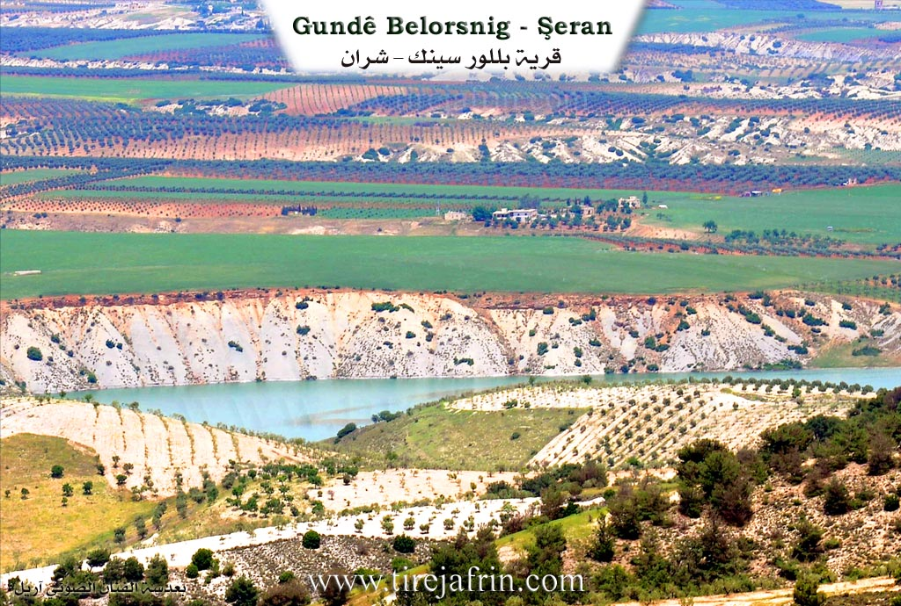
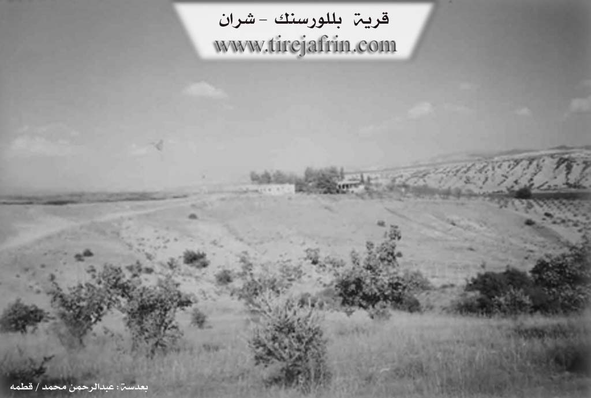

General Information
Nahiya (Subdistrict)
Şera
Also Known As
Billuriya, Pelûsankê, بللورسنك, بللورية, باليسنكه, بلورية, بلورسينك
Families, Clans, etc.
Cemîl Axa, Faîq Menan Axa Şêx Ismaîl Zade

Photos


Basic Information about Pelûsankê
Source: Tirej Afrin
Etymology: The Kurdish name for the elderberry tree, which is a tree with fragrant white flowers (Pelsank)
Foundation Date/Period: Approximately 200 years ago
Summaries
I. Summary from TirejAfrin Site (English) of Pelûsankê
Source: https://www.tirejafrin.com/site/kura%20afrin%20%20sheran%20-%20balorsank.htm
It is stated in the book Çiyayê Kurmênc (Efrîn): A Geographical Study: Pelsank, Bilûriye /521 inhabitants/:
Pelsank: The Kurdish name for the "elderberry tree," which is a tree with fragrant white flowers. The name was Arabized to Bilûriye. Its location is between the villages of Zeytûnak and Alciya. It is the village of Faîq Axa Şêx Ismaîl Zade. Its inhabitants abandoned it after his death in the 1960s.
It is stated in the book Efrîn... Her River and Her Green Hills: Bilûrsink: A village in Çiyayê Kurmênc following the Şera subdistrict, Efrîn region, Heleb governorate, (551 inhabitants). It is a very small village located in an agriculturally fertile plain on the right bank of the Çemê Efrînê. It is bordered to the north by a plain and a valley planted with olive trees and the village of Se'rincik; to the south by the valley of the Çemê Efrînê, a mountain range on the southern side planted with olive and forest trees, and the village of Omranlî or Senoberiye; to the west by a valley, a wide agriculturally fertile plain, and the village of Alicî; and to the east by the valley of the Çemê Efrînê course and the village of Wêrkan.
The number of its houses amounts to about 5 houses, and its age is about 200 years. Previously, it consisted of two houses belonging to the family of Faîq Menan Axa Şêx Ismaîl Zade. Currently, there are no houses in it, and it is as if it were a ruin. The old village was at a distance of 1km east of the current village. Currently, the family of Cemîl Axa and his grandson Şewqî Cemîl Axa live there.
The road connecting to it is a paved dirt road coming from Alicî. Its lands are agriculturally fertile due to its proximity to the Çemê Efrînê on the northern side of the river. Its inhabitants work in the cultivation of olives, grains, and summer vegetables, some rain fed and some irrigated from the valley of the Çemê Efrînê, alongside raising sheep and goats. There are no services in it. They drink water from artesian wells, and a modern electricity network is currently available in it.
Sources of Information:
- Book: جبل الكرد (عفرين) دراسة جغرافية Çiyayê Kurmênc (Efrîn): A Geographical Study by د. محمد عبدو علي Dr. Mihemed Ebdo Elî.
- Book: عفرين .... نهرها وروابيها الخضراء Efrîn... Her River and Her Green Hills by عبدالرحمن محمد Ebdulrehman Mihemed from the village of Qetme.
- Studies of Navenda Tirej Soft / Ebdulrehman Hacî Osman.
- Some residents of the villages.
Preparation and Execution: Manager of Tirej Efrîn site: Ebdulrehman Hacî Osman 20/12/2013
Foundation/Origin Information of Pelûsankê
It is a village of the late Agha Sheikh Ismail Zadeh. It was previously two houses belonging to a family subordinate to him. The old village was 1km east of the current village. The Jamil Agha family and his grandson Shawqi Jamil Agha currently live there.
Source: TirejAfrin Site
Possible Village Name Meaning of Pelûsankê
Palusank is the Kurdish name for the 'birch tree', a tree with white bark and a pleasant fragrance. The name was arabized to al-Billuriya.
Source: TirejAfrin Site